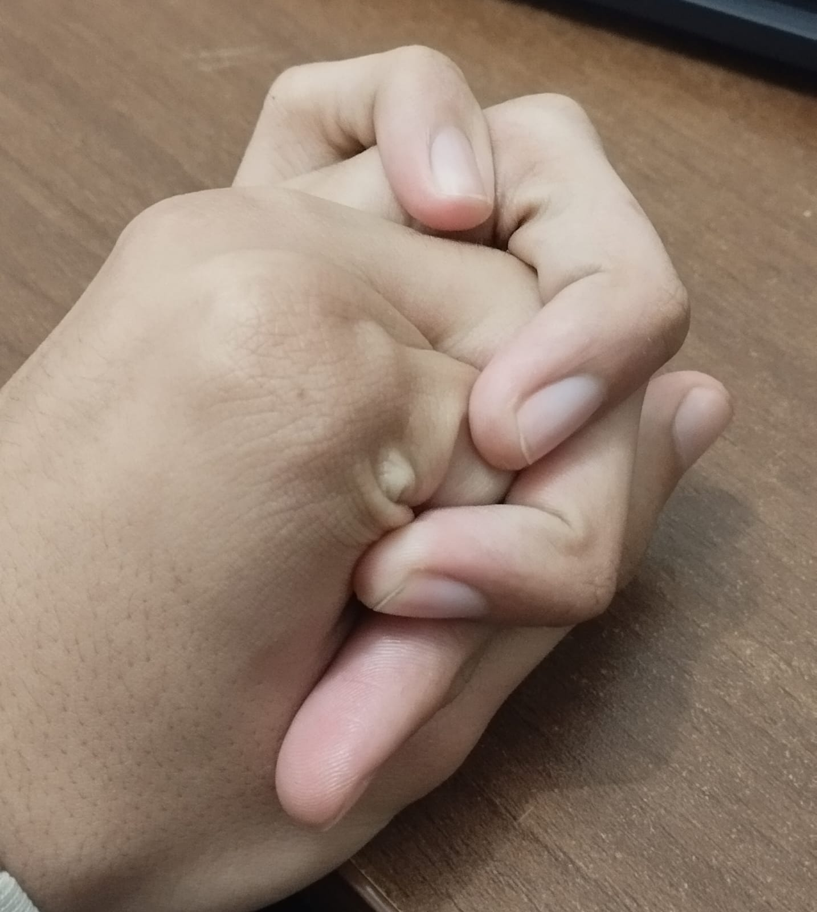

Um pequeno lugar da internet onde curiosidades completamente aleatórias são arquivadas para nunca mais serem esquecidas.
"Sou fascinado por lasanha qualquer sabor que como até passar mal."
"Até hoje só escrevi no máximo 5 cartas na minha vida."
"O principal meio que me sinto amado é com a simples presença de alguém que eu amo."
"Gosto de qualquer tipo de pintura, principalmente à lápis de cor e aquarela."
"Meus livros favoritos são Ensaio Sobre a Cegueira (José Saramago), O Menino do Pijama Listrado (John Boyne) e Cristianismo Puro e Simples (C.S. Lewis)."
"Meus dedos da mão são tão grandes que eu consigo fazer o que eu chamo de "escadinha" com eles. Segue anexo:"

"Eu morava no bairro Icuí-Guajará, Ananindeua (Pará) quando dia 27 de outubro de 2021 viajei de ônibus por 3 dias, chegando em Curitiba no dia 30 de outubro de 2021."
"Minhas cores favoritas são Azul Marinho e Bordô. Porém, para roupas gosto de estilo de idoso e paletas de preto, branco, marrom e bege.s"
"Meu anime favorito da vida é Shingeki no Kyojin (Attack on Titan)."
"O Mr. Arroche não gosta de café sem açúcar. O mesmo afirma sentir ânsia de vômito durante o período que tentou gostar do intorpecente à force. 😀"
Olá! Sou Rafael, mais conhecido como Dr. Gatão ou Mr. Arroche, Rafael. Bacharelando de Psicologia, especializando em Pokémon, amante de violino e fascinado por bolo de cenoura com cobertura de chocolate. Explorador decuriosidades completamente inúteis e qualquer assunto suficientemente interessante para virar uma conversa de (pelo menos) três horas.